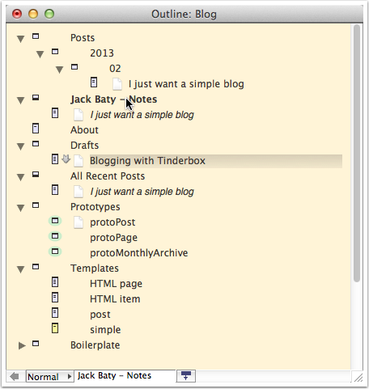

Blogging with Tinderbox
My interest in blogging varies with my mood. I go from digging deep and wanting complete control to just looking to type a few sentences and hit the Publish button. One thing that always returns is the desire to have a basic, static blog running on as simple a server as possible.
Years ago I published a blog using Tinderbox. It was a powerful and flexible tool, but ultimately I fell for the easy, instant gratification of other systems such as Wordpress and Tumblr.
I still use Tinderbox for nearly every other form of note-taking that I do, so I thought I'd revisit the idea of using it to publish a blog. I spent a couple hours last night reacquainting myself with the extensive export system used by Tinderbox. What I still wish for is a built-in easy export mechanism. Something that would give me a basic set of templates that look finished but not necessarily designed. The built-in export in VoodooPad is a good example. Alas, there's nothing quite that easy in Tinderbox, so I dug in and set out to make my own.
Eastgate offers a tool called "Flint" which will, after a number of initial steps, create a Tinderbox document that can be used to publish a basic blog. This works, but the output it generates is becoming a bit dated and it does more than I need, leaving me with something not quite suitable. Instead, I borrowed a few concepts from Flint and started from scratch otherwise.
I wanted a very basic but responsive design. I know a few people who are brilliant with CSS/HTML. I'm not one of them, so I started with HTML5 Boilerplate. The resulting HTML template is included as the "HTML page" note, to which I added some Tinderbox export codes, like so...
^if($ChildCount)^^text^ ^children(/Templates/post) ^else^ ^include(this,/Templates/HTML item)^ ^endif^
Basically this outputs the current note's text or a list of child notes if they exist. The child notes are from the Posts container and are formatted using the template "post". It's not as complicated as it sounds, really. The outline of the Tinderbox source document looks like this:
That's as far as I've gotten. All it takes is a press of Command-Shift-H ("Export as HTML...") and the site is rendered, or "baked" as it's sometimes called. I just FTP the entire exported site to my Linode VPS and here we are. I still need RSS feeds, a way to render archives, and some sort of fancy footer. Eventually there may be simple navigation or other widgets, but for now it's good enough to publish, and I get to keep my notes in Tinderbox, where they belong.